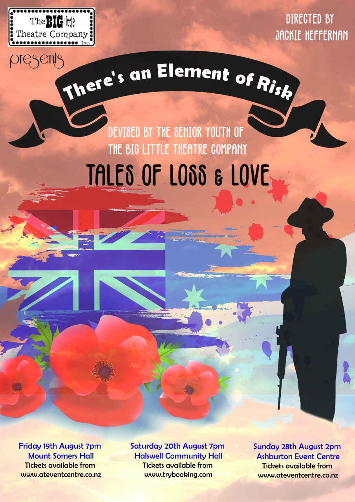

Coming Up:

Don’t miss our (Covid-delayed) ANZAC show, finally hitting the stage in August: ‘There’s an Element of Risk’.
Devised by Students of the Big Little Theatre Company, this show will make you laugh out loud, and maybe shed a tear as well.
The last BLTC production sold out for every show, so plan ahead and secure your tickets soon.
Tickets will be available here soon for the following shows:
Friday 19 August 7pm: Mt Somers Hall.
Saturday 20 August 7pm: Halswell Community Hall.
Sunday 28 August 2pm: Ashburton Events Centre.